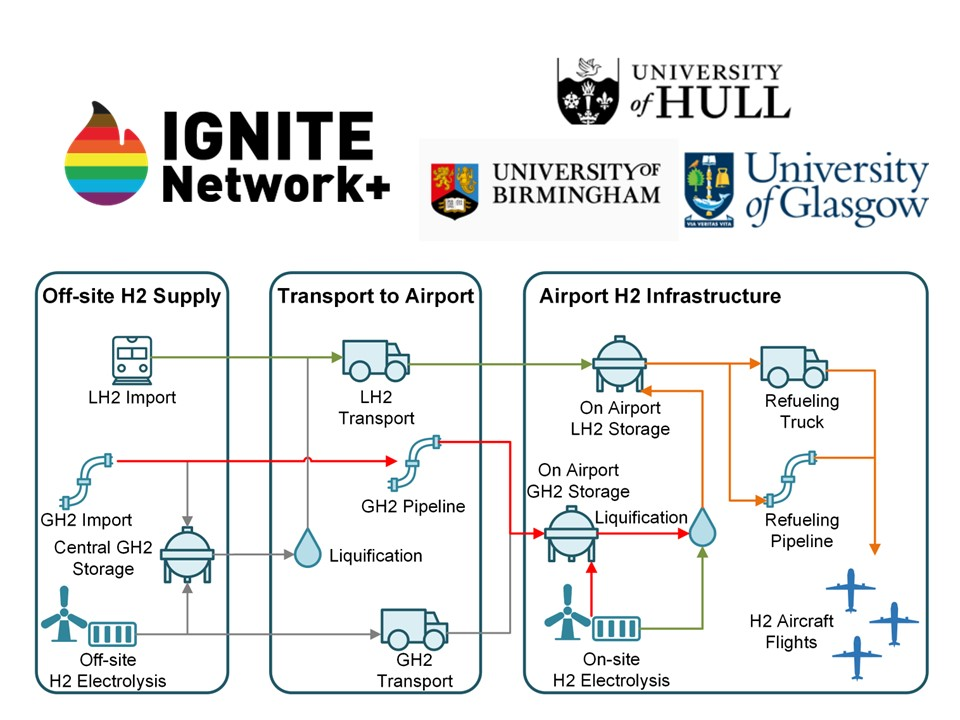
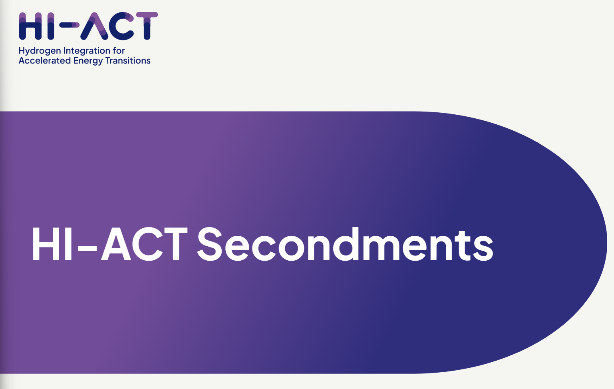
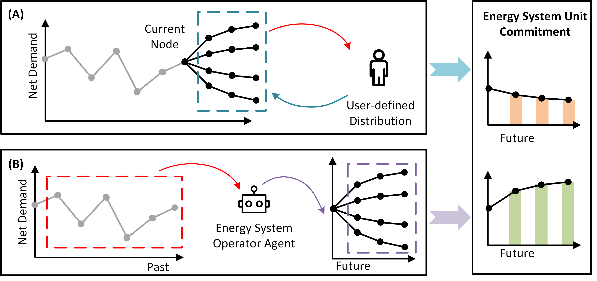
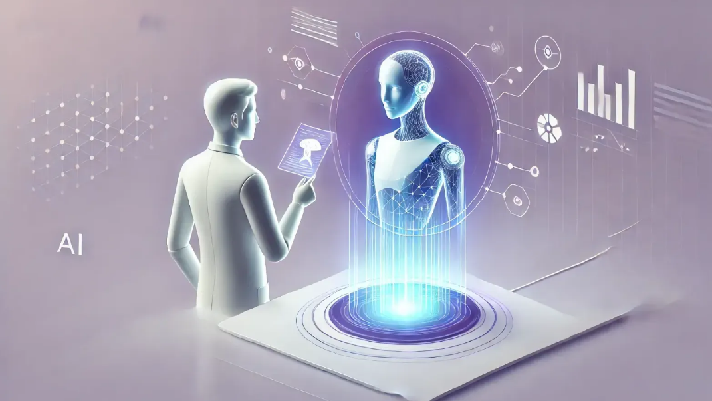

|
Zekun Guo
Welcome to my personal website!
I am a Lecturer at the Centre of Excellence for Data Science, Artificial Intelligence, and Modelling (DAIM) at
University of Hull,
serving as Postgraduate Research Director.
I earned my PhD from Brunel University of London in September 2023. I also hold an MRes in Energy Systems (2019) from
The University of Edinburgh and a BEng in Energy and Environmental System Engineering (2018) from Shandong University.
I am leading the MSc Artificial Intelligence for Engineering variant programme.
As part of this programme, I developed its core module, AI-Driven Optimisation and Control, integrating cutting-edge AI technologies into engineering practices to solve real-world industrial challenges.
At DAIM, I lead the Large Language Model (LLM) Agent Research Team as part of the AI for Optimisation Theme, where we pioneer the development of LLM-based multi-agent systems for vertical applications. Our work focuses on creating innovative vertical AI Agent applications across Biology, Healthcare, Engineering, Sustainability and Business, with an emphasis on enhancing the safety, efficiency, and problem-solving capabilities of multi-agent frameworks.
|
|
|
- Transportation Electrification
- Power System Stability and Resilience
- Artificial Intelligence Applications in Electrical Engineering
- Artificial Intelligence Driven Control for Offshore Renewable Energy
- Large Language Model (LLM) Multi Agent System
If you are interested in conducting research with me, please visit this Google Doc link, where I will share some topics I am interested in pursuing.
Feel free to reach out to me with a message like, "Hi, I am interested in [topic name], let's collaborate!".
For undergraduate and postgraduate students, it is never too early to reach out. You will have the opportunity to work on meaningful research projects with us, co-author publications, and enhance your employability and increasing your chances of securing a PhD studentship.
|
|

|
Net-Zero Emissions Aviation: Developing Hydrogen Energy Infrastructure at Airports
Funder: IGNITE Network+ Flexible Fund
Grant: ~£60,000, March 2025 - March 2026
Project Leads: Dr Zekun Guo (University of Hull), Dr Tongtong Zhang (University of Birmingham), Dr Yihuai Zhang (University of Glasgow)
Learn More
|
|

|
Modelling Hydrogen and Electric Demand at Airports for UK Decarbonised Aviation
Funder: HI-ACT Flexible Fund
Grant: £10,835, Feb 2025 - May 2025
Project Lead: Dr Zekun Guo (University of Hull)
Secondment Host: Prof Sara Walker, Birmingham Energy Institute, University of Birmingham.
Learn More
|
|

|
Can Large Language Model Agents Balance Energy Systems?
arXiv:2502.10557, 2025
We integrate LLMs with a multi-scenario SUC framework to improve efficiency and reliability under high wind uncertainties. Experiments show that the approach cuts costs and load curtailment.
arXiv · GitHub
|
|

|
Bridging Minds and Machines: Agents with Human-in-the-Loop – Frontier Research, Real-World Impact, and Tomorrow’s Possibilities
Bridging Human Expertise and AI Autonomy in Multi-Agent Systems
Authors: Xiaotian Jin, Zekun Guo, Puzhen Zhang, Shuo Lu, Weisi Dai, Nujibieke, Lanping Guo, Wendong Fan, Guohao Li, 2025
Blog Link
|
|
I teach or have taught the following modules for MSc Data Science and Artificial Intelligence at postgraduate levels:
- Applied Artificial Intelligence (Module 771767)
- Research and Application in AI and Data Science （Module 771765）
- MSc Research Project (Module 771764)
I will also design and teach the core module of MSc Artificial Intelligence for Engineering variant programme:
|
|